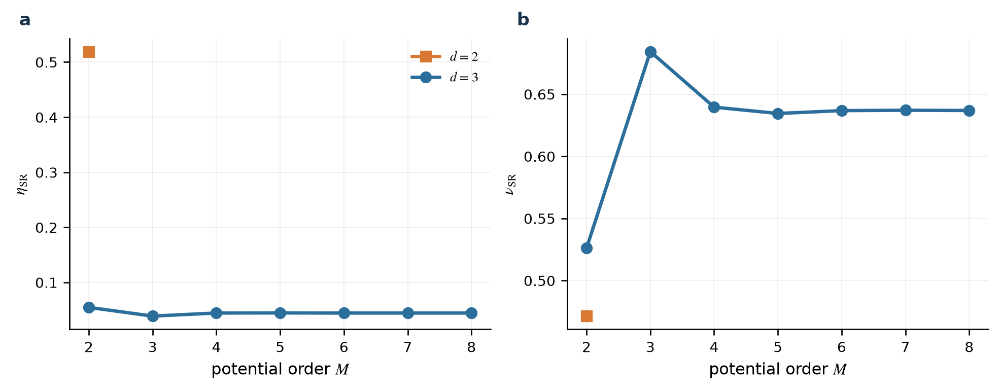
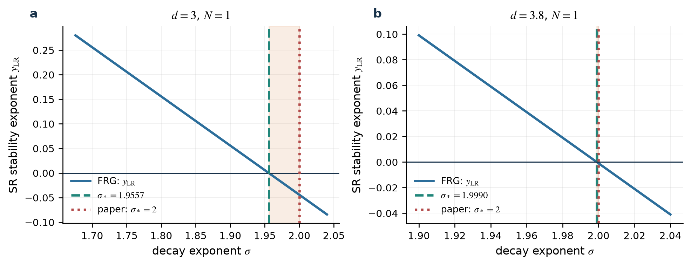
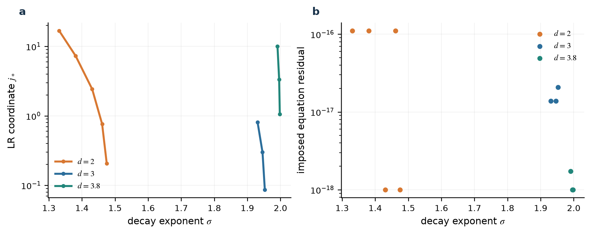
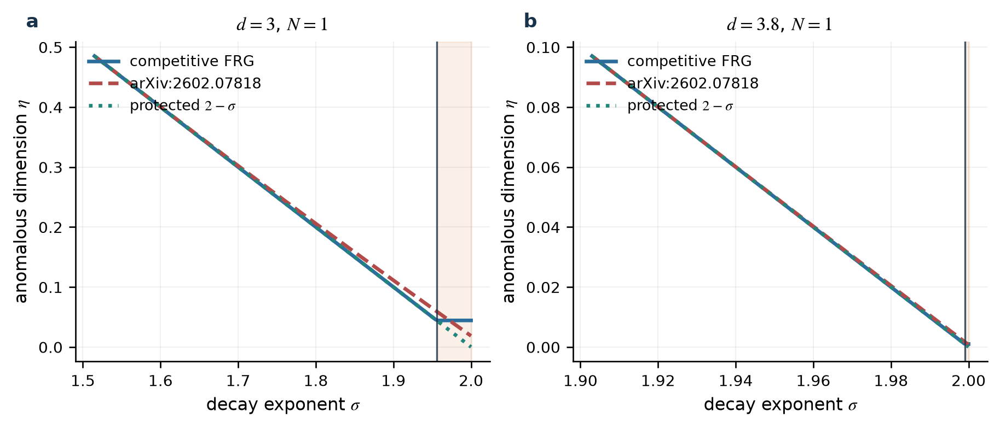
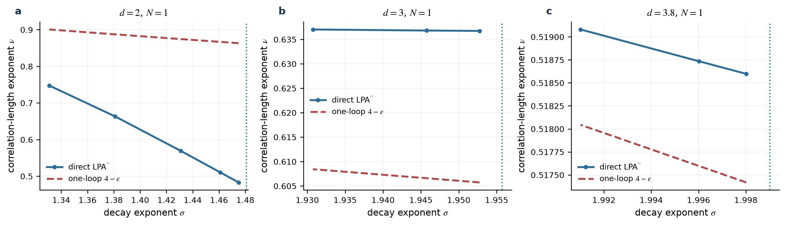
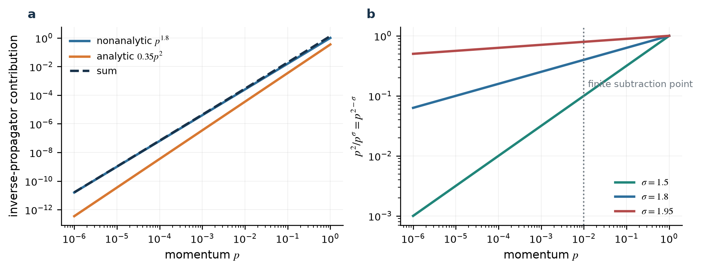
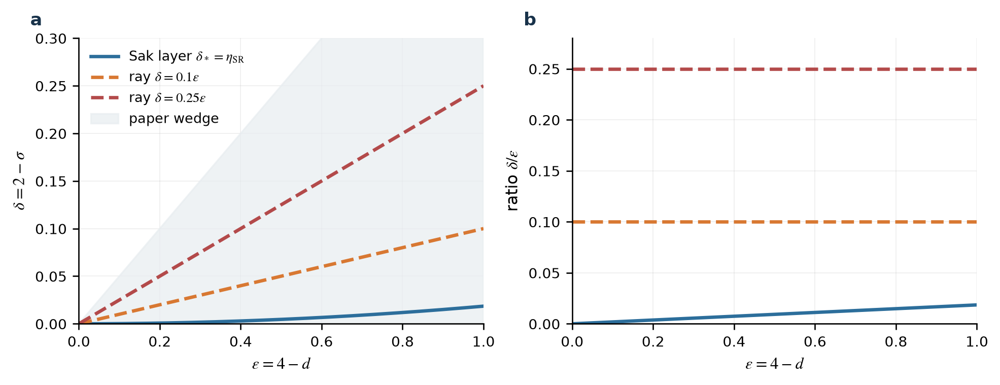

先给答案
arXiv:2602.07818v2 的一圈 \(1/\nu\) 可以保留；两圈 \(\eta\) 修正与 \(\sigma_*=2\) 没有由其推导建立。
独立 FRG 在同一有效作用量中保留 \(Z_{\sigma,k}|q|^\sigma\) 和 \(Z_{2,k}q^2\)。在固定未重整化场（bare field）的归一化并分开投影两个算符的约定下，抵消 UV（短距离、高动量）发散所需的 counterterm 是局域补偿项，因此预存的非整数幂核没有独立 loop counterterm：\(Z_{\sigma,k}\) 不流动，而 \(Z_{2,k}\) 流动；这不排除 \(k\to0\) 时最终完整的二点逆传播子含有限的非解析动量依赖。短程固定点处长程扰动的精确线性本征值为 \(y_{\rm LR}=2-\eta_{\rm SR}-\sigma\)，其零点是 \(\sigma_*=2-\eta_{\rm SR}\)，与早期 RG、非微扰 FRG、共形场论，以及严格 RG 在其弱耦合近上临界维适用域内的算符标度一致。[3][4][5][8][11]
目标稿的两圈 sunset 自能含有 \(1/(2\epsilon-3\delta)\)，但该极点的留数乘在局域 \(q^2\) 算符上。目标稿在有限减法点对 \(|q|^\sigma\) 求导，把 \(q^2\) 的贡献混入所谓场重整化；此外，打印的 Eq. (24)→(25) 与 Eq. (37)→(38) 各有一个可直接复核的因子 2 不一致，Eq. (36)→(37) 还有符号不一致。结论应表述为“v2 的推导未建立其主张”，而不是以权威意见替代计算。
问题是什么？
考虑 \(d\) 维晶格上的 \(O(N)\) 自旋模型。每个自旋 \(\mathbf S_i\) 有 \(N\) 个分量，远距离耦合按幂律衰减：
\(\sigma\) 越小，相互作用越长程。连续极限的二点逆传播子必须允许两个独立的低动量结构：
长程相互作用的上临界维数是 \(d_{\rm up}=2\sigma\)。在 \(d/2<\sigma\) 时四次相互作用不再是 Gaussian 意义下的无关项，问题进入相互作用固定点区域。真正有争议的是：当 \(\sigma\) 接近 2 时，长程固定点在哪个 \(\sigma_*\) 与短程固定点交换稳定性？
目标论文的主张
Li、Chen 与 Deng 的预印本 arXiv:2602.07818v2 取
并在 \(0<\delta<\epsilon/2\) 的长程相互作用区给出[1]
第二式等价于标准的一圈长程结果 \(1/\nu=\sigma-(N+2)\epsilon'/(N+8)+O(\epsilon'^2)\)，本审计没有否定它。第一式则给 \(\eta\) 添加两圈修正，并被用于支持 \(\sigma_*=2\)。要决定后一主张，必须同时计算短程与长程动能方向的稳定性；只在先令 \(Z_2=0\) 的单一长程理论中求一个固定点，并不能得到两固定点交换的位置。
双动能算符的泛函重整化群
泛函重整化群（functional renormalization group, FRG）把动量低于 \(k\) 的涨落暂时抑制，得到随 \(k\) 变化的有效平均作用量 \(\Gamma_k\)。它满足精确 Wetterich 方程：
\(R_k\) 是红外 regulator：它只改变尚未积分的低动量模，并在 \(k\to0\) 消失。精确方程仍是泛函方程，数值计算必须选择保留哪些算符。本工作采用竞争动能 \(\mathrm{LPA}^{\prime\prime}\) 截断[5]：
这里 \(U_k\) 是局域有效势；\(Z_{\sigma,k}\) 与 \(Z_{2,k}\) 分别乘非解析和解析动能。两者都放入 mixed optimized cutoff，避免预先指定哪一项支配红外。用短程动能归一化后定义
决定交叉的精确一行
在上述固定 bare field 归一化约定中，重整化所需的 UV counterterms 是局域解析算符，不给既有非整数幂核 \(|q|^\sigma\) 添加独立 counterterm。因此 \(\partial_tZ_{\sigma,k}=0\)，并立刻得到
在短程固定点 \(j_*=0\)，长程扰动的红外相关指数是
它在 \(\sigma_*=2-\eta_{\rm SR}\) 变号。在长程固定点 \(j_*\ne0\)，同一个 beta 函数强制 \(\eta_2=2-\sigma\)。这两个结论不依赖有效势截断到多少阶；数值截断只影响 \(\eta_{\rm SR}\)、\(\nu\) 与固定点坐标的近似值。
实际求解的流方程
作用量中的有量纲场不变量记为 \(\rho_{\rm dim}=\boldsymbol\phi^2/2\)。先定义无量纲变量
为使公式简洁，下文重新用 \(\rho\) 表示 \(\widetilde\rho\)，所有撇号都表示对这个无量纲变量求导。本代码实际求解
\(\kappa\) 是无量纲势能的最低点，\(\lambda_m=u^{(m)}(\kappa)\)。势能在移动最低点附近展开为
代码用截断 Taylor jet（保存有限阶 Taylor 系数并直接实现加、乘、倒数等运算）计算这些导数，不依赖符号展开。稳定矩阵 \(B_{ab}=\partial\beta_a/\partial g_b\) 用 complex-step 微分：给参数加入极小虚部，再由虚部读取导数，从而避免普通有限差分的相消误差。由于采用 \(t=\ln(k/\Lambda)\)，热方向本征值 \(\lambda_t<0\)，且 \(\nu=-1/\lambda_t\)。在长程分支上，\(\nu\) 来自包含 \(j\) 与全部势耦合的完整矩阵，而不是删掉 \(j\) 后的子块。
数值结果与精度门槛
所有被接受的固定点都满足：\(\kappa>0\)、\(\lambda_2>0\)、regulated propagator 分母为正、势能扇区只有一个相关方向、归一化 beta 残差低于设定门槛。\(d=2\) 的最低点多项式从 \(M=3\) 起产生额外相关伪方向，因此被拒绝；这比报告一串看似收敛的伪数值更重要。
这里“归一化残差”定义为 \(\|(\beta_\kappa,\beta_{\lambda_2}/2!,\ldots,\beta_{\lambda_M}/M!,\beta_j)\|_\infty\)。它衡量离散非线性方程是否解准，而不是 FRG 截断的物理误差；未缩放导数坐标中的残差也保存在 JSON。
| \(d\) | \(N\) | \(M\) | \(\eta_{\rm SR}\) | \(\nu_{\rm SR}\) | \(\sigma_*\) | 归一化残差 | 判定 |
|---|---|---|---|---|---|---|---|
| 2.0 | 1 | 2 | 0.51906136169 | 0.47133940404 | 1.4809386383 | 8.04e-18 | 仅低阶诊断 |
| 3.0 | 1 | 8 | 0.044273891177 | 0.63679051347 | 1.9557261088 | 1.6e-10 | 通过 M=8 门槛 |
| 3.8 | 1 | 8 | 0.00098524130123 | 0.51853247185 | 1.9990147587 | 4.55e-12 | 通过 M=8 门槛 |
| 3.0 | 2 | 8 | 0.043703197956 | 0.68597145122 | 1.956296802 | 8e-11 | 通过 M=8 门槛 |
| 3.0 | 3 | 8 | 0.040896292397 | 0.73182562351 | 1.9591037076 | 2.09e-11 | 通过 M=8 门槛 |

阈值：同一公式，三个精度层次
| 情形 | \(\eta_{\rm SR}\) | \(\nu_{\rm SR}\) | \(\sigma_*=2-\eta_{\rm SR}\) | 用途 |
|---|---|---|---|---|
| 本工作 \(d=3\)，竞争 \(\mathrm{LPA}^{\prime\prime}\)，\(M=8\) | 0.04427389118 | 0.6367905135 | 1.955726109 | 求解器输出；小数位不代表物理精度 |
| 已发表 \(d=3\) 短程 \(O(\partial^6)\) FRG[14][15] | 0.0361(11) | 0.63012(16) | 1.9639(11) | 高阶 FRG 外部基准，未用于调参 |
| \(d=3\) conformal bootstrap 基准[26] | 0.0362978(20) | 0.629971(4) | 1.9637022(20) | 非 FRG 精确度基准 |
| \(d=2\) Ising 精确结果[27] | 1/4 | 1 | 7/4 | 检验低维截断偏差 |
本工作 \(d=3\) 的 \(M=7\to8\) 位移只有 \(\Delta\eta=1.695e-05\)，但与高阶导数展开的差约为 \(8.2\times10^{-3}\)。后者才揭示主要系统偏差来自 derivative expansion 层级，而不是势能阶数。高阶短程 FRG 的收敛与误差估计见 Refs. [14][15]。

长程分支：完整稳定矩阵
| \(d\) | \(M\) | \(\sigma\) 范围 | \(j_*\) 范围 | \(\nu_{\rm FRG}\) 范围 | 施加关系的最大求解残差 |
|---|---|---|---|---|---|
| 2.0 | 2 | 1.3309386–1.4749386 | 0.20603–16.867 | 0.48308729–0.74748531 | 1.11e-16 |
| 3.0 | 6 | 1.9307397–1.9527397 | 0.08641–0.81347 | 0.6367329–0.63702648 | 2.08e-17 |
| 3.8 | 4 | 1.9910155–1.9980155 | 1.0623–10.025 | 0.51859801–0.51908008 | 1.73e-18 |



sunset 极点究竟属于哪个算符？
sunset diagram 是由三个内部传播子组成的两圈自能图。目标稿给出的动量结构本身足以判定通道：
定义 \(\varrho=2\epsilon-3\delta\)（这里用 \(\varrho\) 避免与场不变量 \(\rho\) 混淆），则
这里展示的是 Eq. (36) Gamma 因子的展开；把该式打印的自能整体负号计入后，整行符号一起翻转，但极点仍明确乘 \(q^2\)。它是局域梯度算符在 \(d=4,\sigma=2\) 共同原点处与 \(|q|^\sigma\) 退化时的 operator mixing；operator mixing 指具有相同或近似标度的算符在重整化时线性组合，而不是它们在所有动量上变成同一个函数。对 \(|q|^\sigma\) 做导数后可通过 Gamma 函数递推出现 \(\Gamma(\varrho/2)\)；那是后续投影结构，不能替代上式中的自能系数。

三个可复核的内部代数问题
两条极限使用不同的小参数：Eq. (24) 的 \(\varrho_\eta=2\epsilon-3\eta\)，Eq. (37) 的 \(\varrho_\delta=2\epsilon-3\delta\)。只有在 leading order 代入 \(\eta=\delta+O(\epsilon^2)\) 后，它们才可作同阶比较。
| 目标稿步骤 | 直接检查 | 结果 |
|---|---|---|
| Eq. (24)→(25) | \(\lim_{\varrho_\eta\to0}\varrho_\eta\Gamma(-1+\varrho_\eta/2)/\Gamma(3)=-1\) | 数值 -1.000000021；打印的后一式相差因子 2 |
| Eq. (37)→(38) | \(\lim_{\varrho_\delta\to0}\varrho_\delta\Gamma(\varrho_\delta/2)/\Gamma(3)=1\) | 数值 0.9999999711；打印的后一式相差因子 2 |
| Eq. (36)→(37) | 按 Eq. (36) 的整体负号和 \(-\partial\Sigma/\partial|q|^\sigma\) 求导 | Eq. (37) 第二行还缺一个负号，除非另行改变自能约定 |
这不是说 \(1/(2\epsilon-3\delta)\) “不存在”。它确实存在，但其算符归属被错误解释。沿 \(\delta=c\epsilon\to0\) 的射线，\(q^2\) 与 \(|q|^\sigma\) 同时退化，单点 subtraction 可以消去 leading 常数发散；仍会留下依赖 \(c\) 与 \(\ln q\) 的有限 mixing。没有独立 \(Z_2q^2\) 的单通道方案不能唯一地把这部分叫作物理 \(\eta\)。在 near-local 基底中可以出现非零 field renormalization；正确做法是保留并对角化混合，同时维持长程分支的受保护场维数。一个相关例子见 Bianchi、Cardinale 与 de Sabbata 的局域展开组织方式。[16]
为什么 \(\delta=O(\epsilon)\) 的展开看不见真正边界层？
短程 \(O(N)\) 模型在 \(d=4-\epsilon\) 的首个非零反常维数为
因此 Sak 位移是
目标稿的幂次计数（power counting，即规定各小参数如何随 \(\epsilon\) 缩放）取 \(\delta=O(\epsilon)\)；一般的缩放射线可写为 \(\delta=c\epsilon\)。对任意非零常数 \(c\)，这些射线都比真正的 \(O(\epsilon^2)\) 交叉层宽一个参数阶。它们可以描述已经处于长程侧的固定点，却不能仅凭该展开判断极窄层内的稳定性交换。

另一个简单域检查是：在目标稿声明的 \(0<\delta<\epsilon/2\) 内，\(2\epsilon-3\delta>\epsilon/2>0\)。所谓极点超平面 \(\delta=2\epsilon/3\) 不穿过物理楔形，只在共同原点与其相接。其 \(1/\epsilon\) 增强反映退化算符的非一致极限，不自动等于长程场的反常维数。
能说什么，不能说什么
本计算支持的结论
- 在固定裸场归一化并保留 \(q^\sigma\) 与 \(q^2\) 的 FRG 中，\(\partial_tZ_\sigma=0\)，而 \(Z_2\) 流动；长程分支满足 \(\eta=2-\sigma\)。这与非微扰 FRG、CFT，以及严格 RG 在其靠近长程上临界维的弱耦合定理域内的非局域动能保护相一致。[5][7][10][11]
- 短程固定点的长程扰动本征值是 \(y_{\rm LR}=2-\eta_{\rm SR}-\sigma\)，所以相同截断内的阈值必为 \(2-\eta_{\rm SR}\)。
- 目标稿的一圈 \(u^*\)、\(y_u\) 与 \(1/\nu\) 与标准 \(\epsilon'=2\sigma-d\) 展开相容；问题集中在两圈动量投影及由此推出的 \(\eta\) 和全局固定点图。
- 目标稿 sunset 极点的 leading operator 是 \(q^2\)，且打印公式存在两个因子 2 与一个符号问题。
本计算不声称的内容
- 不把本工作 \(\mathrm{LPA}^{\prime\prime}\) 的 \(d=3\) 小数位当作高精度物理预测；高阶 derivative expansion 的外部结果单独列出。
- 不把 \(d=2,M=2\) 的 \(\sigma_*=1.4809\ldots\) 当成可信阈值。二维最低点多项式失败；Ising 精确基准是 \(7/4\)，且没有拿它来调节求解器。
- 不宣称本报告单独解决了近期 Monte Carlo 争议。早期 Ising 模拟支持 Sak 边界[18][20]；2026 年预印本报告 \(\sigma_*=2\) 的相反拟合[21]。有限尺寸对数修正与 crossover length 使数值判别尤其困难。
- 不把二维 XY 或 Heisenberg 数据直接套入普通 Wilson–Fisher 势能流。XY 的 BKT 转变涉及 vortex fugacity，\(\xi\) 是本质奇异而非有限 \(\nu\) 幂律；近期含 vortex/spin-wave coupling 的 RG 甚至与部分 Monte Carlo 相反。[22][25] 二维短程 Heisenberg 也没有普通有限温临界固定点。
有效维数映射可给出有用的 \(\nu\) 估计，但它在非 Gaussian 固定点不是精确等式；竞争动能 FRG 与现代比较均明确这一点。[6] 因此本报告没有用该映射替代直接稳定矩阵。
学术与引用审计
所有文献条目均从 DOI 或 arXiv 官方记录核对。目标稿参考文献中还发现以下元数据问题；它们不决定物理结论，但公开列出可避免继续传播错误。
| 严重性 | 位置/键 | 发现 | 核验修正 |
|---|---|---|---|
| high | yamazaki_department_1977 | The target Ref.bib gives the title as 'Department of Applied Physics, Tohoku University, Sendai 980, Japan', which is an affiliation, and omits the article pages and DOI. | Yoshitake Yamazaki, 'Critical exponent η of isotropic spin systems with long and short-range interactions', Physics Letters A 61(4), 207–210 (1977), DOI 10.1016/0375-9601(77)90139-6. |
| critical | Picco2012 | The target entry combines Marco Picco's 2012 title and arXiv identifier with year 1972 and DOI 10.1103/PhysRevLett.28.240, which belong to a different publication. | Marco Picco, 'Critical behavior of the Ising model with long range interactions', arXiv:1207.1018 (2012). The official arXiv record lists no related journal DOI. |
| critical | main.tex introduction, sentence listing Ising, XY, and Heisenberg simulations | The Heisenberg clause cites BibTeX key yao_nonclassical_2025, which is 'The Nonclassical Regime of the Two-dimensional Long-range XY Model' (Physical Review B 112, 144429), not a Heisenberg paper. | The current Heisenberg preprint is arXiv:2512.01956v2 by Tianning Xiao, Dingyun Yao, Lode Polle, Zhijie Fan, and Youjin Deng. |
| medium | duplicate_ising_entries | Both entries identify arXiv:2512.04805 and the same four authors; they are duplicate records of one preprint. | Keep one record using the current arXiv v2 year 2026 and reference_id xiao_liu_fan_deng_2026. |
| medium | duplicate_xy_prb_entries | Both entries identify the same Physical Review B 112, 144429 paper, arXiv:2411.01811, DOI 10.1103/yghs-p5mg. | Keep one record using reference_id yao_xiao_zhang_deng_fan_2025. |
| medium | duplicate_xy_cpl_entries | Both entries describe Chinese Physics Letters 42, 070002; the first omits the DOI and arXiv identifier. | Keep one record with DOI 10.1088/0256-307X/42/7/070002 and arXiv:2404.08498, using reference_id xiao_yao_zhang_fan_deng_2025_cpl. |
| high | duplicate_and_stale_heisenberg_entries | Both entries identify arXiv:2512.01956 and duplicate one another. They also contain the stale v1-style author list/order and omit Lode Polle relative to the current v2 record. | Use the current v2 metadata: Tianning Xiao, Dingyun Yao, Lode Polle, Zhijie Fan, and Youjin Deng; originally submitted in 2025 and revised in 2026; reference_id xiao_yao_polle_fan_deng_2026. |
| high | benedetti_correction_missing_from_target_context | The target manuscript cites the 2020 three-loop long-range multi-scalar calculation without using the published 2025 addendum in the audited comparison. | Any numerical use of the three-loop calculation must also cite DOI 10.1088/1751-8121/adbfe4, arXiv:2411.00805, because it corrects one diagram and updates the exponents. |
特别是 Yamazaki 1977 的正确题名是 “Critical exponent \(\eta\) of isotropic spin systems with long and short-range interactions”[17]；目标稿条目把作者单位误放进题名。Benedetti 等人的三圈结果应与 2025 addendum 一起引用。[12][13]
复现方法
从仓库根目录运行：
uv sync
uv run python projects/long-range-on-frg/scripts/run_campaign.py
uv run python projects/long-range-on-frg/scripts/build_report.py
uv run pytest projects/long-range-on-frg/tests -q
uv run ruff check projects/long-range-on-frg第一条分析命令重新求固定点、完整稳定矩阵和审计极限；第二条从 JSON 重画 PNG/PDF 并渲染本页。主要可审查文件：
- 双动能算符 FRG 与 Taylor-jet 求解器
- 目标公式、sunset 幂次与 Gamma 留数检查
- 完整数值结果（JSON）
- 目标论文逐式审计（JSON）
- 文献元数据与允许支持的 claim（JSON）
数值生成时间：2026-07-31T14:40:38.263926+00:00。JSON 使用严格有限数，不包含 NaN。所有图同时提供位图预览与可缩放 PDF。
参考文献
- Zhiyi Li, Kun Chen, Youjin Deng. “The 4-ε Expansion for Long-range Interacting Systems.” arXiv preprint (2026). DOI: 10.48550/arXiv.2602.07818. 预印本，未同行评审。
- Michael E. Fisher, Shang-keng Ma, B. G. Nickel. “Critical Exponents for Long-Range Interactions.” Physical Review Letters 29, 917–920 (1972). DOI: 10.1103/PhysRevLett.29.917.
- J. Sak. “Recursion Relations and Fixed Points for Ferromagnets with Long-Range Interactions.” Physical Review B 8, 281–285 (1973). DOI: 10.1103/PhysRevB.8.281.
- J. Honkonen, M. Yu. Nalimov. “Crossover between field theories with short-range and long-range exchange or correlations.” Journal of Physics A: Mathematical and General 22, 751–763 (1989). DOI: 10.1088/0305-4470/22/6/024.
- Nicolò Defenu, Andrea Trombettoni, Alessandro Codello. “Fixed-point structure and effective fractional dimensionality for \(O(N)\) models with long-range interactions.” Physical Review E 92, 052113 (2015). DOI: 10.1103/PhysRevE.92.052113.
- Andrea Solfanelli, Nicolò Defenu. “Universality in long-range interacting systems: The effective dimension approach.” Physical Review E 110, 044121 (2024). DOI: 10.1103/PhysRevE.110.044121.
- Miguel F. Paulos, Slava Rychkov, Balt C. van Rees, Bernardo Zan. “Conformal Invariance in the Long-Range Ising Model.” Nuclear Physics B 902, 246–291 (2016). DOI: 10.1016/j.nuclphysb.2015.10.018.
- Connor Behan, Leonardo Rastelli, Slava Rychkov, Bernardo Zan. “Long-Range Critical Exponents near the Short-Range Crossover.” Physical Review Letters 118, 241601 (2017). DOI: 10.1103/PhysRevLett.118.241601.
- Connor Behan, Leonardo Rastelli, Slava Rychkov, Bernardo Zan. “A scaling theory for the long-range to short-range crossover and an infrared duality.” Journal of Physics A: Mathematical and Theoretical 50, 354002 (2017). DOI: 10.1088/1751-8121/aa8099.
- Connor Behan, Edoardo Lauria, Maria Nocchi, Philine van Vliet. “Analytic and numerical bootstrap for the long-range Ising model.” Journal of High Energy Physics 03 (2024) 136 (2024). DOI: 10.1007/JHEP03(2024)136.
- Martin Lohmann, Gordon Slade, Benjamin C. Wallace. “Critical Two-Point Function for Long-Range \(O(n)\) Models Below the Upper Critical Dimension.” Journal of Statistical Physics 169, 1132–1161 (2017). DOI: 10.1007/s10955-017-1904-x.
- Dario Benedetti, Razvan Gurau, Sabine Harribey, Kenta Suzuki. “Long-range multi-scalar models at three loops.” Journal of Physics A: Mathematical and Theoretical 53, 445008 (2020). DOI: 10.1088/1751-8121/abb6ae.
- Dario Benedetti, Razvan Gurau, Sabine Harribey. “Addendum: Long-range multi-scalar models at three loops.” Journal of Physics A: Mathematical and Theoretical 58, 129401 (2025). DOI: 10.1088/1751-8121/adbfe4.
- Ivan Balog, Hugues Chaté, Bertrand Delamotte, Maroje Marohnić, Nicolás Wschebor. “Convergence of Nonperturbative Approximations to the Renormalization Group.” Physical Review Letters 123, 240604 (2019). DOI: 10.1103/PhysRevLett.123.240604.
- Gonzalo De Polsi, Ivan Balog, Matthieu Tissier, Nicolás Wschebor. “Precision calculation of critical exponents in the \(O(N)\) universality classes with the nonperturbative renormalization group.” Physical Review E 101, 042113 (2020). DOI: 10.1103/PhysRevE.101.042113.
- Lorenzo Bianchi, Leonardo S. Cardinale, Elia de Sabbata. “Defects in the long-range \(O(N)\) model.” Journal of Physics A: Mathematical and Theoretical 58, 335401 (2025). DOI: 10.1088/1751-8121/adf788.
- Yoshitake Yamazaki. “Critical exponent η of isotropic spin systems with long and short-range interactions.” Physics Letters A 61, 207–210 (1977). DOI: 10.1016/0375-9601(77)90139-6.
- Erik Luijten, Henk W. J. Blöte. “The Boundary between Long-Range and Short-Range Critical Behavior.” Physical Review Letters 89, 025703 (2002). DOI: 10.1103/PhysRevLett.89.025703.
- Marco Picco. “Critical behavior of the Ising model with long range interactions.” arXiv preprint (2012). DOI: 10.48550/arXiv.1207.1018. 预印本，未同行评审。
- Maria Chiara Angelini, Giorgio Parisi, Federico Ricci-Tersenghi. “Relations between Short Range and Long Range Ising models.” Physical Review E 89, 062120 (2014). DOI: 10.1103/PhysRevE.89.062120.
- Tianning Xiao, Ziyu Liu, Zhijie Fan, Youjin Deng. “On Sak's criterion for statistical models with long-range interaction.” arXiv preprint, version 2 (2026). DOI: 10.48550/arXiv.2512.04805. 预印本，未同行评审。
- Dingyun Yao, Tianning Xiao, Chao Zhang, Youjin Deng, Zhijie Fan. “The Nonclassical Regime of the Two-dimensional Long-range XY Model: A Comprehensive Monte Carlo Study.” Physical Review B 112, 144429 (2025). DOI: 10.1103/yghs-p5mg.
- Tianning Xiao, Dingyun Yao, Chao Zhang, Zhijie Fan, Youjin Deng. “Two-Dimensional XY Ferromagnet Induced by Long-Range Interaction.” Chinese Physics Letters 42, 070002 (2025). DOI: 10.1088/0256-307X/42/7/070002.
- Tianning Xiao, Dingyun Yao, Lode Polle, Zhijie Fan, Youjin Deng. “Spontaneous Symmetry Breaking in Two-dimensional Long-range Heisenberg Model.” arXiv preprint, version 2 (revised 2026) (2025). DOI: 10.48550/arXiv.2512.01956. 预印本，未同行评审。
- Luis Walther, Josef Willsher, Johannes Knolle. “Persistence of the Berezinskii-Kosterlitz-Thouless Transition with Long-Range Couplings.” Physical Review Letters 136, 227102 (2026). DOI: 10.1103/9y2v-ybdb.
- Filip Kos, David Poland, David Simmons-Duffin. “Bootstrapping Mixed Correlators in the 3D Ising Model.” Journal of High Energy Physics 11 (2014) 109 (2014). DOI: 10.1007/JHEP11(2014)109.
- Tai Tsun Wu, Barry M. McCoy, Craig A. Tracy, Eytan Barouch. “Spin-spin correlation functions for the two-dimensional Ising model: Exact theory in the scaling region.” Physical Review B 13, 316–374 (1976). DOI: 10.1103/PhysRevB.13.316.